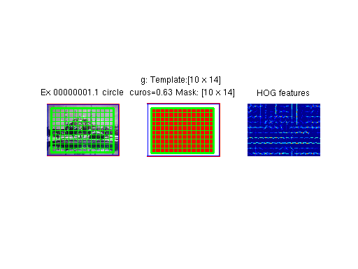
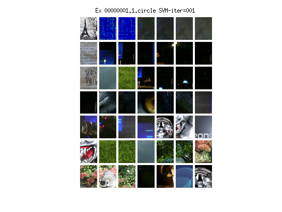
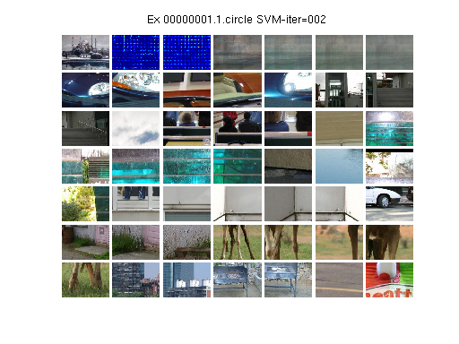
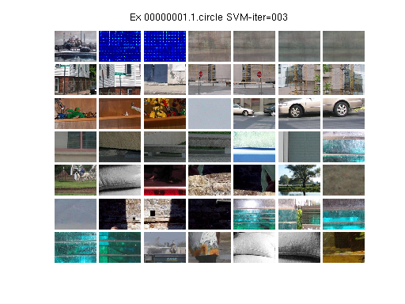

Contents
% DEMO: Training Exemplar-SVMs from a single image % % Copyright (C) 2011-12 by Tomasz Malisiewicz % (Restructured and edited by Abhinav Shrivastava) % All rights reserved. % % This file is part of the Exemplar-SVM library and is made % available under the terms of the MIT license (see COPYING file). % Project homepage: https://github.com/quantombone/exemplarsvm % function [models] = esvm_train_single_exemplar(I, bb, negFolder)
% Train model for a single image: esvm_train_single_exemplar returns the % trained model for given input, trained against the given dataset of % images. % [models]: Trained model % [I]: Input image in double format % [bb]: Bounding box of the object of interest % (for complete image bb should be [1 1 size(I,2) size(I,1)] % [negFolder]: Folder path (string) that contains negative images if nargin==0 %Input query image I = im2double(imread('./images/painting.jpg')); %Bounding-box of region-of-interest (which is usually entire images in case %of full image matching and object bounding-box in case of detection tasks. bb = [1 1 size(I, 2) size(I, 1)]; %Folder that contains our negative image or rather dataset images that are %random images from web. negFolder = '~/datasetImages/'; end addpath(genpath(pwd))
Make Positive and Negative sets
[pos_set, neg_set] = esvm_get_positive_negative_sets(I, bb, negFolder);
models_name = 'image';
Set exemplar-initialization parameters
params = esvm_get_default_params; params.init_params.sbin = 8; params.init_params.MAXDIM = 15; params.model_type = 'exemplar'; %enable display so that nice visualizations pop up during learning params.dataset_params.display = 1; %if localdir is not set, we do not dump files %params.dataset_params.localdir = '/nfs/baikal/tmalisie/synthetic/'; %%Initialize exemplar stream stream_params.stream_set_name = 'trainval'; stream_params.stream_max_ex = 10; stream_params.must_have_seg = 0; stream_params.must_have_seg_string = ''; stream_params.model_type = 'exemplar'; %must be scene or exemplar %assign pos_set as variable, because we need it for visualization stream_params.pos_set = pos_set; stream_params.cls = '';
Get the positive stream
e_stream_set = esvm_get_pascal_stream(stream_params, params.dataset_params);
.esvm_get_pascal_stream: length of stream=00001
Initialize Exemplars
Each exemplar will have a figure, where on the first image is the exemplar's image, along with the exemplar bounding box and HOG grid overlayed. The second image shows the HOG mask along with its offset to the ground-truth bounding box. The third image shows the initial HOG features used to define the exemplar.
initial_models = esvm_initialize_exemplars(e_stream_set, params, ...
models_name);
.initialized with HOG_size = [10 14]
Set exemplar-svm training parameters
train_params = params; train_params.detect_max_scale = 1.0; train_params.train_max_mined_images = 10000; train_params.detect_max_windows_per_exemplar = 400;
Perform Exemplar-SVM training
Because display is turned on, we will show the result of each exemplar's training iteration. Each iteration shows a diagnostic first column then the remaining rows are the top negative support vectors used to define the exemplar's decision boundary. The diagnostic row shows: exemplar, w's positive part, w's negative part, and four mean support vector images, where the means are computed with the first 1:N/4, 1:N/2, .. , 1:N support vectors.
[models] = esvm_train_exemplars(initial_models, ...
neg_set, train_params);
Randomizing mining queue Found 0022 windows, image:00031 (#seen=00001/00130, max = 36.465) Found 0023 windows, image:00087 (#seen=00002/00130, max = 31.876) Found 0030 windows, image:00022 (#seen=00003/00130, max = 32.671) Found 0026 windows, image:00035 (#seen=00004/00130, max = 34.108) Found 0021 windows, image:00050 (#seen=00005/00130, max = 34.780) Found 0025 windows, image:00077 (#seen=00006/00130, max = 35.635) Found 0023 windows, image:00076 (#seen=00007/00130, max = 29.377) Found 0021 windows, image:00071 (#seen=00008/00130, max = 35.899) Found 0033 windows, image:00092 (#seen=00009/00130, max = 26.294) Found 0012 windows, image:00093 (#seen=00010/00130, max = 36.454) Found 0051 windows, image:00097 (#seen=00011/00130, max = 34.553) Found 0041 windows, image:00065 (#seen=00012/00130, max = 30.667) Found 0022 windows, image:00107 (#seen=00013/00130, max = 35.267) Found 0015 windows, image:00017 (#seen=00014/00130, max = 36.700) Found 0019 windows, image:00058 (#seen=00015/00130, max = 36.378) Found 0026 windows, image:00061 (#seen=00016/00130, max = 22.759) Found 0031 windows, image:00023 (#seen=00017/00130, max = 33.223) Found 0020 windows, image:00021 (#seen=00018/00130, max = 33.861) Found 0036 windows, image:00049 (#seen=00019/00130, max = 30.754) Found 0025 windows, image:00037 (#seen=00020/00130, max = 27.445) Found 0017 windows, image:00078 (#seen=00021/00130, max = 35.268) Found 0008 windows, image:00108 (#seen=00022/00130, max = 31.243) Found 0025 windows, image:00041 (#seen=00023/00130, max = 34.527) Found 0012 windows, image:00081 (#seen=00024/00130, max = 35.144) Found 0018 windows, image:00045 (#seen=00025/00130, max = 32.416) Found 0032 windows, image:00063 (#seen=00026/00130, max = 37.413) Found 0004 windows, image:00109 (#seen=00027/00130, max = 34.310) Found 0014 windows, image:00098 (#seen=00028/00130, max = 36.018) Found 0024 windows, image:00113 (#seen=00029/00130, max = 37.124) Found 0009 windows, image:00121 (#seen=00030/00130, max = 35.146) Found 0011 windows, image:00003 (#seen=00031/00130, max = 39.658) Found 0030 windows, image:00096 (#seen=00032/00130, max = 30.829) Found 0009 windows, image:00053 (#seen=00033/00130, max = 36.916) Found 0006 windows, image:00057 (#seen=00034/00130, max = 38.267) Found 0020 windows, image:00056 (#seen=00035/00130, max = 35.481) Found 0009 windows, image:00082 (#seen=00036/00130, max = 33.481) Found 0042 windows, image:00104 (#seen=00037/00130, max = 31.059) Found 0015 windows, image:00074 (#seen=00038/00130, max = 33.165) Found 0036 windows, image:00101 (#seen=00039/00130, max = 29.073) Found 0010 windows, image:00009 (#seen=00040/00130, max = 38.459) Found 0022 windows, image:00001 (#seen=00041/00130, max = 35.559) Found 0013 windows, image:00010 (#seen=00042/00130, max = 35.641) Found 0026 windows, image:00119 (#seen=00043/00130, max = 39.718) Found 0020 windows, image:00120 (#seen=00044/00130, max = 31.064) Found 0026 windows, image:00059 (#seen=00045/00130, max = 34.866) Found 0016 windows, image:00048 (#seen=00046/00130, max = 37.148) Found 0038 windows, image:00073 (#seen=00047/00130, max = 32.234) Stopping mining because we have 1034 windows from 47 new violators # Violating images: 47, #Non-violating images: 0 ----- Starting SVM: dim=4340... #pos=1, #neg=1034 --- Max positive is 1.000 SVM iteration took 3.178 sec, kept 171 negatives
Found 0058 windows, image:00117 (#seen=00048/00130, max = -0.825) Found 0019 windows, image:00114 (#seen=00049/00130, max = -0.902) Found 0019 windows, image:00033 (#seen=00050/00130, max = -0.894) Found 0015 windows, image:00106 (#seen=00051/00130, max = -0.919) Found 0068 windows, image:00043 (#seen=00052/00130, max = -0.869) Found 0028 windows, image:00079 (#seen=00053/00130, max = -0.928) Found 0041 windows, image:00129 (#seen=00054/00130, max = -0.820) Found 0017 windows, image:00125 (#seen=00055/00130, max = -0.931) Found 0027 windows, image:00085 (#seen=00056/00130, max = -0.897) Found 0007 windows, image:00072 (#seen=00057/00130, max = -0.922) Found 0008 windows, image:00070 (#seen=00058/00130, max = -0.854) Found 0038 windows, image:00123 (#seen=00059/00130, max = -0.799) Found 0019 windows, image:00086 (#seen=00060/00130, max = -0.916) Found 0018 windows, image:00011 (#seen=00061/00130, max = -0.877) Found 0014 windows, image:00054 (#seen=00062/00130, max = -0.894) Found 0009 windows, image:00090 (#seen=00063/00130, max = -0.979) Found 0008 windows, image:00052 (#seen=00064/00130, max = -0.936) Found 0021 windows, image:00026 (#seen=00065/00130, max = -0.889) Found 0025 windows, image:00029 (#seen=00066/00130, max = -0.934) Found 0036 windows, image:00005 (#seen=00067/00130, max = -0.884) Found 0030 windows, image:00118 (#seen=00068/00130, max = -0.885) Found 0022 windows, image:00080 (#seen=00069/00130, max = -0.846) Found 0010 windows, image:00046 (#seen=00070/00130, max = -0.915) Found 0012 windows, image:00007 (#seen=00071/00130, max = -0.810) Found 0022 windows, image:00099 (#seen=00072/00130, max = -0.795) Found 0013 windows, image:00019 (#seen=00073/00130, max = -0.869) Found 0038 windows, image:00034 (#seen=00074/00130, max = -0.836) Found 0009 windows, image:00102 (#seen=00075/00130, max = -0.959) Found 0022 windows, image:00013 (#seen=00076/00130, max = -0.850) Found 0003 windows, image:00122 (#seen=00077/00130, max = -0.911) Found 0018 windows, image:00066 (#seen=00078/00130, max = -0.861) Found 0023 windows, image:00028 (#seen=00079/00130, max = -0.829) Found 0004 windows, image:00064 (#seen=00080/00130, max = -0.858) Found 0021 windows, image:00047 (#seen=00081/00130, max = -0.825) Found 0000 windows, image:00027 (#seen=00082/00130) Found 0011 windows, image:00115 (#seen=00083/00130, max = -0.924) Found 0029 windows, image:00014 (#seen=00084/00130, max = -0.879) Found 0030 windows, image:00040 (#seen=00085/00130, max = -0.905) Found 0019 windows, image:00083 (#seen=00086/00130, max = -0.847) Found 0010 windows, image:00051 (#seen=00087/00130, max = -0.908) Found 0020 windows, image:00095 (#seen=00088/00130, max = -0.813) Found 0018 windows, image:00042 (#seen=00089/00130, max = -0.935) Found 0012 windows, image:00024 (#seen=00090/00130, max = -0.904) Found 0023 windows, image:00105 (#seen=00091/00130, max = -0.834) Found 0005 windows, image:00111 (#seen=00092/00130, max = -0.979) Found 0012 windows, image:00130 (#seen=00093/00130, max = -0.941) Found 0069 windows, image:00112 (#seen=00094/00130, max = -0.860) Stopping mining because we have 1000 windows from 46 new violators # Violating images: 46, #Non-violating images: 1 ----- Starting SVM: dim=4340... #pos=1, #neg=1171 --- Max positive is 1.000 SVM iteration took 2.966 sec, kept 357 negatives
Found 0004 windows, image:00089 (#seen=00095/00130, max = -0.973) Found 0000 windows, image:00069 (#seen=00096/00130) Found 0004 windows, image:00062 (#seen=00097/00130, max = -0.967) Found 0000 windows, image:00068 (#seen=00098/00130) Found 0000 windows, image:00088 (#seen=00099/00130) Found 0003 windows, image:00036 (#seen=00100/00130, max = -0.889) Found 0002 windows, image:00094 (#seen=00101/00130, max = -0.970) Found 0001 windows, image:00116 (#seen=00102/00130, max = -0.932) Found 0000 windows, image:00025 (#seen=00103/00130) Found 0008 windows, image:00124 (#seen=00104/00130, max = -0.936) Found 0012 windows, image:00091 (#seen=00105/00130, max = -0.902) Found 0000 windows, image:00128 (#seen=00106/00130) Found 0007 windows, image:00016 (#seen=00107/00130, max = -0.962) Found 0001 windows, image:00039 (#seen=00108/00130, max = -0.962) Found 0006 windows, image:00030 (#seen=00109/00130, max = -0.885) Found 0001 windows, image:00015 (#seen=00110/00130, max = -0.993) Found 0000 windows, image:00075 (#seen=00111/00130) Found 0001 windows, image:00127 (#seen=00112/00130, max = -0.999) Found 0004 windows, image:00067 (#seen=00113/00130, max = -0.911) Found 0000 windows, image:00103 (#seen=00114/00130) Found 0000 windows, image:00012 (#seen=00115/00130) Found 0000 windows, image:00060 (#seen=00116/00130) Found 0000 windows, image:00100 (#seen=00117/00130) Found 0000 windows, image:00006 (#seen=00118/00130) Found 0000 windows, image:00038 (#seen=00119/00130) Found 0003 windows, image:00020 (#seen=00120/00130, max = -0.924) Found 0000 windows, image:00055 (#seen=00121/00130) Found 0003 windows, image:00084 (#seen=00122/00130, max = -0.979) Found 0007 windows, image:00032 (#seen=00123/00130, max = -0.974) Found 0007 windows, image:00004 (#seen=00124/00130, max = -0.967) Found 0016 windows, image:00110 (#seen=00125/00130, max = -0.870) Found 0002 windows, image:00018 (#seen=00126/00130, max = -0.961) Found 0008 windows, image:00008 (#seen=00127/00130, max = -0.966) Found 0001 windows, image:00126 (#seen=00128/00130, max = -0.969) Found 0007 windows, image:00002 (#seen=00129/00130, max = -0.829) Found 0000 windows, image:00044 (#seen=00130/00130) # Violating images: 22, #Non-violating images: 14 ----- Starting SVM: dim=4340... #pos=1, #neg=465 --- Max positive is 1.000 SVM iteration took 2.126 sec, kept 258 negatives
### End of training...
ans =
[1x1 struct]